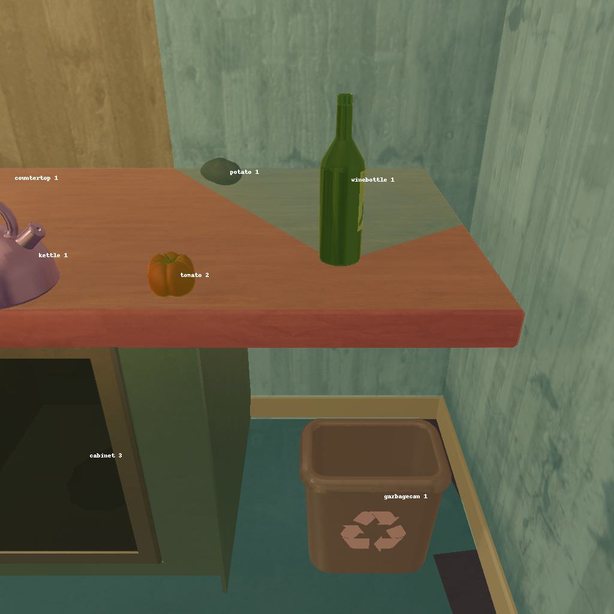

---------------------------------------------------------task: 26---------------------------------------------------------
--------------------------------------------------------------------------------------------------------------------------------------------------------------------
--------------------------------------------------------------------------------------------------------------------------------------------------------------------
Step:--------------------------------------------------------------------------6-------------------------------------------------------------------------------
----------------------------------------
VLM Prompt:
Image1:
Image2:
Image3:
**Instruction**
1. Analyze the provided image to identify all visible household objects, focusing on those relevant to the task description "find two kettle and put them in cabinet."
2. Use the analysis of the image and the task hint "The agent must find an object of the desired type, pick it up, find the correct location to place it, put it down there, then look for another object of the desired type, pick it up, return to previous location, and put it down there with the other object." to answer the question: what is the most reasonable action in the choices for the task description "find two kettle and put them in cabinet"?
4. Decide and write the answer using the template: The answer is: (i): , where i is the real number. If there is no desired object in the image, search every place based on **Initial Observation** to find the object. And if no one is exactly correct, choose a similar answer.
**Initial Observation**
You are in the middle of a room. Looking quickly around you, you can see countertop (1), coffeemachine (1), cabinet (1-4), drawer (1-8), sink (1), sinkbasin (1), garbagecan (1), fridge (1), microwave (1), dresser (1), sidetable (1)
**Answer Choices**
(1): go to countertop 1
(2): go to coffeemachine 1
(3): go to cabinet 1
(4): go to drawer 1
(5): go to sink 1
(6): go to sinkbasin 1
(7): go to garbagecan 1
(8): go to cabinet 4
(9): go to drawer 2
(10): go to fridge 1
(11): go to microwave 1
(12): go to dresser 1
(13): go to sidetable 1
(14): go to drawer 3
(15): go to drawer 4
(16): go to drawer 5
(17): go to drawer 6
(18): go to drawer 7
(19): go to drawer 8
(20): close cabinet 3
(21): take winebottle 1 from cabinet 3
(22): take kettle 1 from cabinet 3
(23): take tomato 2 from cabinet 3
(24): take potato 1 from cabinet 3
(25): examine cabinet 3
**Answer**
Let's think step by step by following the instructions.
----------------------------------------
----------------------------------------
Original Response:
First, we need to identify all visible household objects in the provided images:
Image 1:
- countertop 1
- sink 1
- sinkbasin 1
- faucet 2
- houseplant 1
- knife 1
- bread
- lettuce
- drawer 1
- cabinet 2
Image 2 & 3:
- countertop 1
- kettle 1
- tomato 2
- potato 1
- winebottle 1
- cabinet 3
- garbagecan 1
Now, let's analyze the task description "find two kettle and put them in cabinet." We can see in images 2 and 3 that there is a kettle (kettle 1) inside cabinet 3, which is an object of the desired type for the task. According to the task hint, the agent must pick it up and find the correct location to place it. Since cabinet 3 is already open and the kettle is there, the most reasonable action is to take the kettle from the cabinet.
Based on the Initial Observation, we have to look for another kettle after placing the first one in the correct location. We can search in cabinets, drawers, and other places as listed to find the second kettle. But for now, we should focus on taking the kettle that is already visible in the image.
Therefore, the answer is: (22): take kettle 1 from cabinet 3.
----------------------------------------
----------------------------------------
>>> Refine Original VLM Response and Get Pure Action: No action
----------------------------------------
-----------------------------------------------------------------
Running time: 16.14269518852234 seconds
Total Money: 16.763860000000005
-----------------------------------------------------------------
-----------------------------------------------------------------
Text Observation:Nothing happens.
-----------------------------------------------------------------
UNSUCCEED